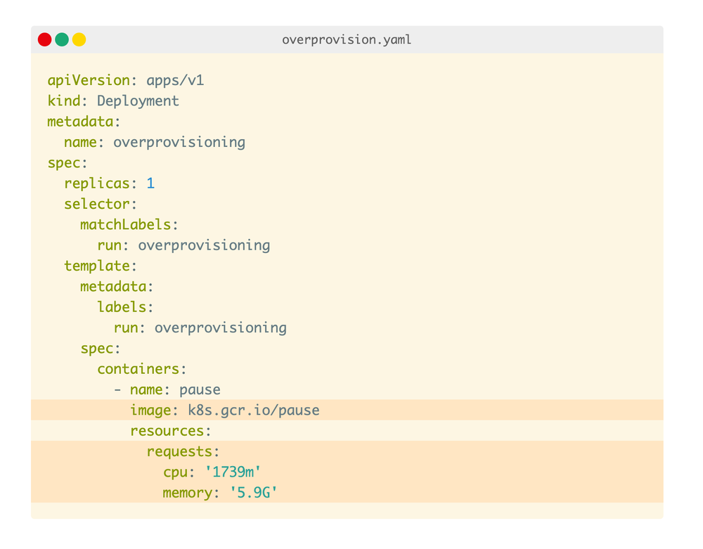

前言
这篇内容篇幅比较长，如果不想深入探讨或时间有限，这是全文简述： 在默认设置下，扩展 Kubernetes 集群中的 pod 和节点可能需要几分钟时间。 了解如何调整集群节点的大小、配置水平和集群自动缩放器以及过度配置集群以加快扩展速度。
目录
- 当自动伸缩的 Pod 报错
- Kubernetes 的 Cluster Autoscaler 是如何工作的
- 探索 Pod 自动伸缩提前期
- 为 Kubernetes 节点选择最佳实例大小
- 在 Kubernetes 集群中过度配置节点
- 为 Pod 选择正确的内存和CPU资源
- 关于集群的缩容
- 为什么不基于内存或CPU进行自动伸缩
在 Kubernetes 中, 自动伸缩功能包括:
- Pod水平自动伸缩（Horizontal Pod Autoscaler，HPA）
- Pod垂直自动伸缩（Vertical Pod Autoscaler，VPA）
- 集群自动伸缩（Cluster Autoscaler，CA）
这些自动伸缩组件属于不同的类别，关注点也不同。
Horizontal Pod Autoscaler 负责增加 Pod 的副本数量。随着你的应用接收到的流量越来越多，你可以让自动伸缩组件调整副本数量来处理更多的请求。
Vertical Pod Autoscaler 的使用场景是，当资源不足无法创建更多的 Pod 副本时，而又仍然需要处理更多的流量。 一个简单的例子，你无法通过简单地添加更多的 Pod 副本来扩容数据库。数据库可能需要进行数据分片或者配置只读节点。 但你可以通过增加内存和CPU资源来让数据库能够处理更多的连接数。 这正是 VPA 的目的，增加 Pod 的资源大小。
最后，我们要说说集群自动伸缩组件了。 当你的集群资源不足时，Cluster Autoscaler 会配置一个新的计算单元并将其添加到集群中。如果空节点过多，会移除它们以降低成本。
虽然这三个组件都 “自动伸缩” 了一些东西，但它们并不造成相互之间的干扰。它们各自都有自己使用场景，定义和工作机制。并且它们是在独立的项目中开发的，独立的使用。 然而，更重要的是，为了最好的 scaling 你的集群，你必须花些心思去设置好这些 Autoscaler，让我们看个例子。
当自动伸缩的 Pod 报错
想象一下，有一个应用程序始终需要并使用 1.5GB 内存和 0.25 个 vCPU。 你配置了一个具有 8GB 和 2 个 vCPU 的单个节点的集群 —— 它应该能够完美地容纳四个 pod（并且还有一点额外的空间）。
现在，你部署了一个 Pod 并且配置如下：
- HPA 配置每 10 个请求进来就添加一个 Pod 副本（例如：如果有 40 个并发请求涌入，会扩容到 4 个 Pod 副本）。
- CA 配置在资源不足时，创建更多的 Node 节点。
HPA 可以通过在 deployment 文件中使用 Custom Metrics（例如在 Ingress Controller 中的 queries per second（QPS）） 来扩容 Pod 副本数量。
现在，你开始为集群增加 30 个并发请求，并观察一下情况：
- HPA 开始扩容 Pod。
- 创建了两个 Pod 副本。
- CA 没有触发 - 没有新增集群 Node 节点。
这很好理解，因为现在有足够的内存和 CPU 资源来支持更多的 Pod。

你进一步将流量增加到 40 个并发请求，并再次观察：
- HPA 又创建了一个 Pod。
- 这个 Pod 是 pending 状态并且无法被部署。
- CA 触发创建了一个新的 Node 节点。
- 新 Node 节点启动 4 分钟后开始工作。之后，pending Pod 也成功被部署了。
为什么第四个 Pod 没有部署在第一个 Node 节点上呢？
Pod 部署在集群上需要消耗内存，CPU，硬盘空间等资源，在同一个 Node 上，操作系统和 kubelet 组件也需要消耗内存和 CPU 资源。
Kubernetes 中一个 Worker Node 节点的内存和 CPU 等资源使用分布如下：
- 需要运行操作系统和一些系统级的守护进程，例如 SSH，Systemd 等。
- 需要运行 Kubernetes Agent 组件，例如 Kubelet，Container Runtime，Node Problem Detector 等。
- 需要运行 Pod。
- 需要保留一些资源用来驱逐阀值 之用。
你猜的没错，所有这些配额都是可定制的，但你需要好好计算一下。
在一个 8GB 内存和 2vCPU 的单个节点的，可以按如下估算：
- 操作系统运行大概需要 100MB 内存和 0.1vCPU。
- kubelet 运行大概需要 1.8GB 内存和 0.07vCPU。
- 驱逐阀值大概需要 100MB 内存。
剩余的大约 6GB 内存空间和 1.83vCPU 是提供给 Pod 使用的。
如果你的集群需要运行 DaemonSet 资源，像 kube-proxy，那么你应该进一步减少提供给 Pod 的资源。考虑到 kube-proxy 大概需要 128MB 内存和 0.1vCPU，那么剩余大约 5.9GB 内存空间和 1.73vCPU 是提供给 Pod 使用的。
另外，如果还需要运行 CNI 组件（例如：Flannel）和日志收集组件（Flentd），又会进一步减少提供给 Pod 的资源。
在统计完所有其他的资源占用情况后，集群的剩余空间就只够运行三个 Pod 了。
所以第四个会一直保持 “pending” 状态，直到它被调度到其他的 Node 节点上。
既然 Cluster Autoscaler 知道没有空间容纳第四个 Pod，为什么不提前配置一个新节点？ 为什么它要在 Pod 处于 “pending” 状态之后再触发创建新 Node 节点的操作？
Kubernetes 的 Cluster Autoscaler 是如何工作的
Cluster Autoscaler 不是通过观察内存或 CPU 的使用情况来触发自动伸缩的。相反地，是通过对事件的响应和每 10s 对不可调度的 Pod 进行检查。
当 Scheduler 无法找到可以容纳它的 Node 节点时，Pod 就会变成不可调度状态。例如，当一个 Pod 需要 1vCPU 资源而集群只有 0.5vCPU 资源可用，Scheduler 就会把该 Pod 标记为不可调度状态。
这时，Cluster Autoscaler 会开始创建新 Node 节点。创建完成后，它会扫描集群中的不可调度状态的 Pod，检查是否可以将这些 Pod 调度到新节点上。
如果你的集群具有多种节点类型（通常也称为节点组或节点池），则 Cluster Autoscaler 将使用以下策略选择其中一种：
- Random - 随机选择一种节点类型（默认策略）。
- Most Pods - 选择将调度最多 Pod 的节点组。
- Least waste - 选择扩容后空闲 CPU 最少的节点组。
- Price - 选择成本最低的节点组（目前仅适用于 GCP）。
- Priority - 选择优先级最高的节点组（优先级可以手动设置）。
一旦确定了节点类型，Cluster Autoscaler 将调用相关 API 来提供新的计算资源。
如果你使用的是 AWS，Cluster Autoscaler 将预置一个新的 EC2 实例。在 Azure 上，它将创建一个新的虚拟机，并在 GCP 上创建一个新的计算引擎。
创建的节点可能需要一些时间才能出现在 Kubernetes 中。计算资源准备就绪后，节点将被初始化并添加到可以部署未被调度 Pod 的集群中。
不幸的是，配置一个新节点通常会很慢。它可能会花费好几分钟来做这件事。
让我们来看看这几分钟到底干了什么。
探索 Pod 自动伸缩前置期
在新节点上创建新 Pod 所需的时间由四个主要因素决定：
- HPA 的反应时间。
- CA 的反应时间。
- Node 节点的反应时间。
- Pod 创建的时间。
默认地，kubelet 每 10 秒抓取一次 Pod 的 CPU 和内存使用情况。每分钟，Metrics Server 都会聚合这些指标并将它们发送给 Kubernetes API 的其他组件。
Horizontal Pod Autoscaler 控制器负责检查指标并决定扩大或缩小副本数量。
默认地，Horizontal Pod Autoscaler 每 15 秒检查一次 Pod 指标。
Cluster Autoscaler 每 10 秒检查一次集群中不可调度的 Pod。
一旦 CA 检测到不可调度的 Pod，它就会运行一个算法来做决策：
- 需要多少个节点来将所有的不可调度 Pod 部署完成。
- 需要创建那种类型的节点组。
整个过程的时间花费应该是：
- 在少于 100 个节点且每个节点最多 30 个 Pod 的集群上不超过 30 秒。 平均延迟应该是大约 5 秒。
- 在具有 100 到 1000 个节点的集群上不超过 60 秒。 平均延迟应约为 15 秒。
然后是节点配置时间，这主要取决于云提供商。在 3-5 分钟内供应新的计算资源是非常标准的。
最后，Pod 必须由容器运行时创建。启动一个容器应该不会超过几毫秒，但下载容器镜像可能需要几秒钟。 如果没有缓存容器映像，则从容器注册表下载映像可能需要几秒钟到一分钟的时间，具体取决于层的大小和数量。
因此，当集群中没有空间而触发自动伸缩的时间消耗如下：
- Horizontal Pod Autoscaler 可能需要长达 1min30s 来增加副本数量。
- 对于少于 100 个节点的集群，Cluster Autoscaler 应该花费不到 30s 的时间，对于超过 100 个节点的集群，应该不到 1min。
- 云提供商可能需要 3-5min 来创建计算机资源。
- 容器运行时可能需要长达 30s 才能下载容器映像。
如果你的集群规模不是很大，在最坏的情况下，时间消耗：
对于超过 100 个节点的集群，总延迟可能高达 7 分钟。在有更多 Pod 来处理突然激增的流量之前，您是否愿意等待这 7 分钟？
这里提供了几种减少 scaling 时间的方法：
- 调整 Horizontal Pod Autoscaler 的刷新时间（由 –horizontal-pod-autoscaler-sync-period 参数控制，默认 15s）。
- 调整抓取 Pod 的 CPU 和内存使用情况的间隔频率（由 metric-resolution 变量控制，默认 60s）。
- 调整 Cluster Autoscaler 扫描未被调度 Pod 的间隔频率（由 scan-interval 变量控制，默认10s）。
- 调整 Node 节点上缓存容器镜像的方式（通过诸如 kube-fledged 等工具）。
但即使将这些设置调整为很小的值，你仍然会收到云提供商创建计算资源的时间限制。有什么方式优化这个部分吗？
这里可以做两件事：
- 尽可能地避免创建新地 Node 节点。
- 主动提前创建节点，以便在需要时能直接使用。
为 Kubernetes 节点选择最佳实例大小
选择正确的节点实例类型对集群的扩展策略有很大的影响。
考虑一个这样的场景。 你有一个应用需要 1GB 的内存资源和 0.1 vCPU 资源。 你提供的 Node 节点有 4GB 的内存资源和 1 vCPU 资源。 在为操作系统、kubelet 和驱逐阀值保留内存和 CPU 后，将拥有约 2.5GB 的内存资源和 0.7 vCPU 可用于运行 Pod。 所以你的 Node 节点只能承载 2 个 Pod 的运行。

每次扩展 Pod 副本时，都可能会产生最多 7 分钟的延迟（触发 HPA，CA 和云提供商配置计算资源的前置时间）。
让我们来看看如果改成提供 64GB 的内存和 16 vCPU 的节点会发生什么。
在为操作系统、kubelet 和驱逐阀值保留内存和 CPU 后，将拥有约 58.32GB 的内存资源和 15.8 vCPU 可用于运行 Pod。
Node 节点可以承载 58 个 Pod 的运行，只有超过 58 个 Pod 副本时，才需要一个新的节点。
此外，每次向集群中添加节点时，都可以部署多个 Pod。再次触发 Cluster Autoscaler 的机会更少。
选择大型节点实例类型还有另一个好处。 为 kubelet 预留的资源、操作系统和驱逐阀值与运行 Pod 的可用资源之间的比率更大。 看看这张图，它描绘了 Pod 可用的内存。
随着 Node 实例大小的增加，你可以注意到（按比例）可用于 Pod 的资源增加。换句话说，与拥有两个大小一半的实例相比，可以更高效地利用资源。
那应该一直选择最大的实例吗？
节点上可以拥有的 Pod 数量决定了效率的峰值。
一些云提供商将 Pod 的数量限制为 110 个（比如 GKE）。其他一些限制是由底层网络基于每个实例（即AWS）规定的。
所以选择更大的实例类型并不总是一个好的选择。
我们还需要考虑：
- 爆炸半径 - 如果你只有几个节点，那么一个失败节点的影响比你有很多节点的影响更大。
- 自动伸缩的成本更高，因为下一个增量是（非常）大的节点。
假设你为集群选择了正确的实例类型，你在配置新计算单元时可能仍然会遇到延迟。
如果不是在需要扩展时创建新节点，而是提前创建相同的节点会怎么样？
在 Kubernetes 集群中过度配置节点
如果你可以负担得起随时可用的备用节点的话，你可以：
- 提前创建一个空的 Node 节点。
- 一旦空的 Node 节点上有 Pod 了，就会创建另一个空的 Node 节点。
换句话说，让 Cluster Autoscaler 总是保持有一个备用的空 Node 节点。
这是一种权衡：你会产生额外的成本，但扩展新节点的速度会提高。
但有坏消息和好消息。
坏消息是 Cluster Autoscaler 没有内置此功能。它不能被显式的配置，并且也没有提供相应的参数。
好消息是你仍然可以通过一些 trick 的方式来达到这个目的。
你可以运行具有足够请求的 Deployment 来保留一个完整的 Node 节点。你可以将这些 Pod 视为占位符 - 它旨在保留空间，而不是使用资源。
一旦创建了真正的 Pod，就可以驱逐占位符并部署真正的 Pod。
请注意，这一次你仍然需要等待 5 分钟才能将节点添加到集群中，但你可以继续使用当前节点。同时，在后台又提供了一个新的节点。
如何做到这一点呢？
可以使用运行永久休眠的 pod 的部署来配置过度配置。

上图中，你需要特别关注内存和 CPU 配置。Scheduler 会使用这些值来决定部署 Pod 的位置。在这种特殊情况下，它们用于保留空间。
你可以配置一个大型 Pod，该 Pod 的请求大致与可用节点资源相匹配。同时要确保你考虑了 kubelet、操作系统、kube-proxy 等消耗的资源。
如果你的节点实例是 2 vCPU 和 8GB 内存，并且 pod 的可用空间是 1.73 vCPU 和 ~5.9GB 内存，则该节点就无法承载这个 Pod，因为实际的 Pod 可用资源是要小于所需资源的。
为了确保在创建真正的 Pod 时能快速的驱逐占位Pod，可以使用优先级和抢占。
Pod Priority 表示一个 Pod 相对于其他 Pod 的重要性。
当一个 Pod 无法被调度时，Scheduler 会尝试抢占（驱逐）较低优先级的 Pod 以调度 “pending” 的 Pod。
可以使用 PodPriorityClass 在集群中配置 Pod 优先级：
由于 Pod 的默认优先级为 0，而过度配置的 PriorityClass 值为 -1，因此当集群空间不足时，这些 Pod 将首先被逐出。
PriorityClass 还有两个可选字段：globalDefault 和 description。
- description 字段是提供给人阅读的关于 PriorityClass 的描述信息。
- globalDefault 字段表示这个 PriorityClass 的值应该用于没有 priorityClassName 的 Pod。系统中只能存在一个 global Default 设置为 true 的 PriorityClass。
你可以使用下面的命令为你的 Pod 指定优先级：
设置完成！
当集群中没有足够的资源时，Pause Pod 会被抢占，并由新的 Pod 取而代之。
由于 Pause pod 变得不可调度，它会强制 Cluster Autoscaler 向集群添加更多节点。
现在，你已准备好过度配置集群，该是时候考虑优化应用程序以进行扩展了。
为 Pod 选择正确的内存和CPU资源
Cluster Autoscaler 会根据 “pending” Pod 的出现来做出 scaling 决策。
Kubernetes Scheduler 根据 Node 节点的内存和 CPU 负载情况决定将 Pod 分配（或不分配）给节点。
因此，必须为你的工作负载设置正确的资源使用请求，否则您可能会过晚（或过早）触发自动伸缩机制。
让我们看一个例子。
您决定要测试一个应用程序，并发现：
- 在平均负载下，应用程序消耗 512MB 内存和 0.25 vCPU。
- 在高峰期，应用程序应最多消耗 4GB 内存和 1 vCPU。
你的容器的限制应该是 4GB 内存和 1 个 vCPU。但是，请求呢？
Scheduler 在创建 Pod 之前使用 Pod 的内存和 CPU 请求来选择最佳节点。
所以你可以：
- 将请求设置为低于实际平均使用量。
- 保守一点，分配更接近限制的请求。
- 设置请求以匹配实际的限制。
定义低于实际使用的请求是有问题的，因为你的节点经常会被过度使用。
例如，你可以分配 256MB 的内存作为内存请求。Scheduler 可以为每个节点安装两倍的 Pod。然而，Pod 在实践中使用两倍的内存并开始竞争资源 (CPU) 并被驱逐（节点上没有足够的内存）。

过度使用节点会导致过多的驱逐、更多的 kubelet 工作和大量的重新调度。
如果将请求设置为与限制相同的值会发生什么？
在 Kubernetes 中，这通常被称为 Guaranteed Quality of Service 类，指的是 pod 不太可能被终止和驱逐。Scheduler 将为分配的节点上的 Pod 保留整个 CPU 和内存。该类 Pod 运行稳定，但同时该节点的使用效率就会比较低。
如果你的应用平均使用 512MB 的内存，但为它预留了 4GB，那么大部分时间有 3.5GB 未使用。

这值得么？
如果你想要更多的稳定性，是值得的。
如果你想要效率，你可能希望降低请求并在这些请求与限制之间找到平衡。
这通常被称为 Burstable Quality of Service 类，指的是 Pod 消耗稳定但偶尔会突然使用更多内存和 CPU。
当你的请求与应用的实际使用相匹配时，Scheduler 将高效地将你的 Pod 打包到你的节点中。
有时，应用程序可能需要更多内存或 CPU。
- 如果 Node 中有资源，应用程序将会在达到最低消耗之前使用它们。
- 如果 Node 中资源不足，Pod 将竞争资源（CPU），kubelet 可能会尝试驱逐 Pod（内存）。
此时，你应该使用 Guaranteed Quality of Service 还是 Burstable Quality of Service？
这取决于如下两点：
- 当你希望最小化 Pod 的重新调度和驱逐时，请使用 Guaranteed Quality of Service（请求等于限制）。 一个很好的例子是用于数据库的 Pod。
- 当你想要优化集群并明智地使用资源时，请使用 Burstable Quality of Service（请求匹配实际平均使用情况）。 如果您有 Web 应用程序或 REST API，您可能希望使用 Burstable Quality of Service。
那如何选择正确的请求和限制值？
你应该分析应用程序并测量空闲、负载和峰值时的内存和 CPU 消耗。更直接的策略包括部署 Vertical Pod Autoscaler 并等待它建议正确的值。
Vertical Pod Autoscaler 从 Pod 收集数据并应用回归模型来推断请求和限制。
关于集群的缩容
每 10 秒，只有当请求利用率低于 50% 时，Cluster Autoscaler 才会决定删除节点。
换句话说，对于同一节点上的所有 Pod，它会汇总 CPU 和内存请求。
如果它们低于节点容量的一半，Cluster Autoscaler 将考虑当前节点进行缩减。
值得注意的是，Cluster Autoscaler 不考虑实际的 CPU 和内存使用或限制，而只查看资源请求。
在移除节点之前，Cluster Autoscaler 执行：
- Pod 检查以确保 Pod 可以移动到其他节点。
- Node 节点检查以防止节点过早被破坏。
如果检查通过，Cluster Autoscaler 将从集群中删除节点。
为什么不基于内存或CPU进行自动伸缩
在扩缩容时，基于 CPU 或内存的 Cluster Autoscaler 不关心 pod。
想象一下，有一个只有一个节点的集群，并设置 Autoscaler 来添加一个新节点当 CPU 使用率达到总容量的 80%。
然后你决定创建一个具有 3 个副本的 Deployment。三个 Pod 的总资源使用率达到了 CPU 的 85%。
一个新的 Node 节点被提供。如果你不需要更多 Pod 怎么办？你有一个完整节点处于空闲的状态——这不是很好。这种使用 Autoscaler 的方式是不鼓励的。
总结
在 Kubernetes 中定义和实施成功的扩缩容策略需要您掌握几个主题：
- 熟悉 Kubernetes 节点中的可分配资源。
- 微调 Metrics Server、Horizontal Pod Autoscaler 和 Cluster Autoscalers 的刷新间隔。
- 规划集群和节点实例大小。
- 做好容器镜像的缓存。
- 做好应用程序基准测试和分析。
但是上面这些还不够，你还需要使用适当的监控工具，反复测试您的扩缩容策略并调整集群的节点创建速度和成本。